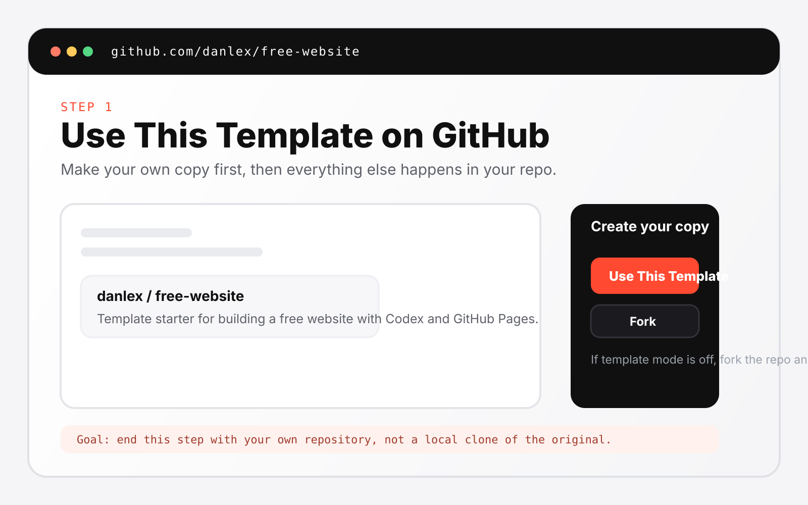
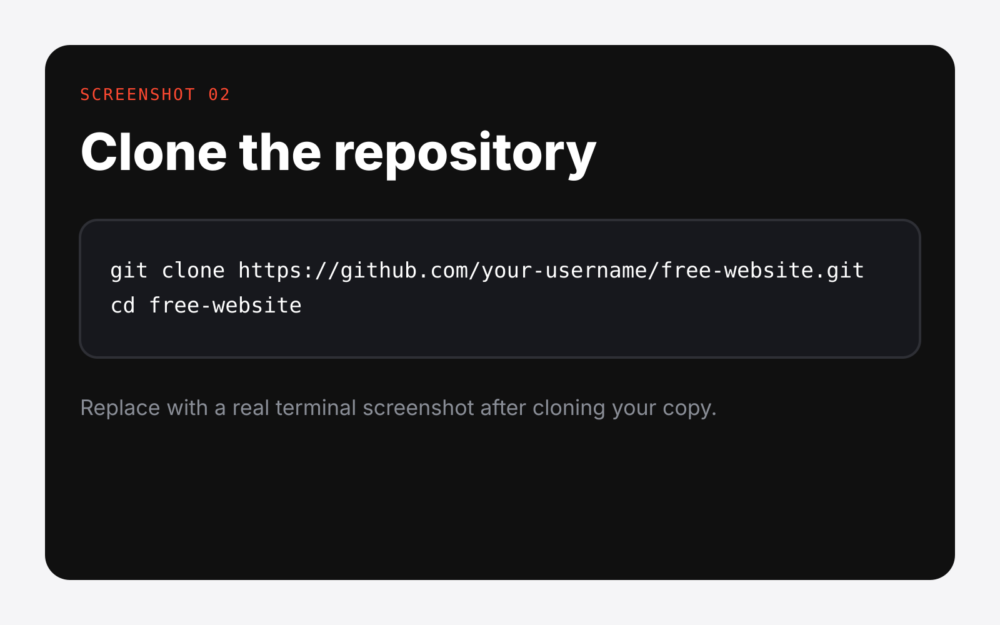
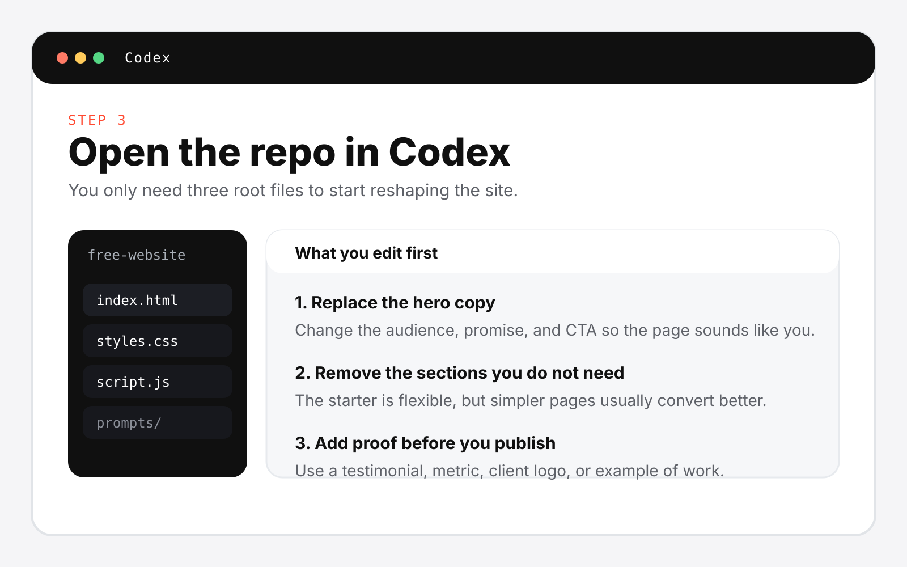
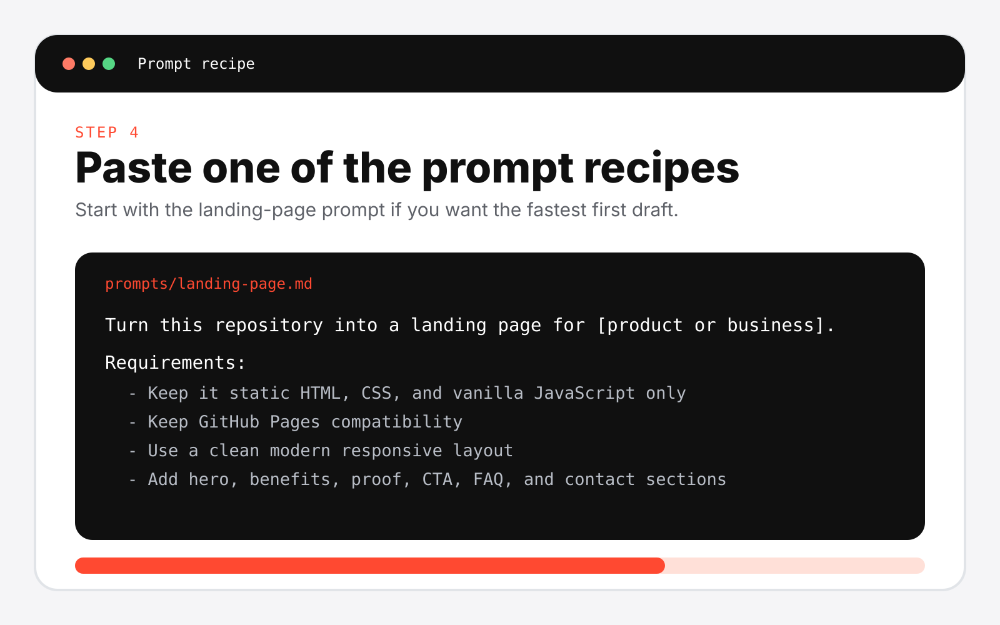
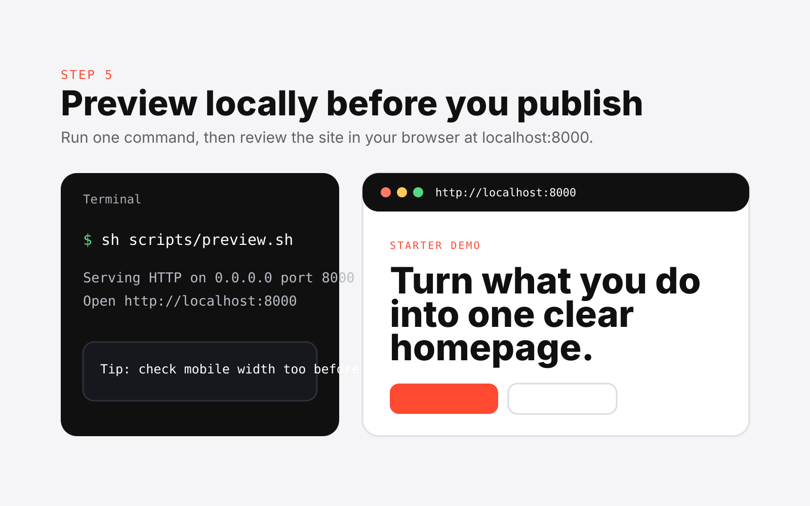
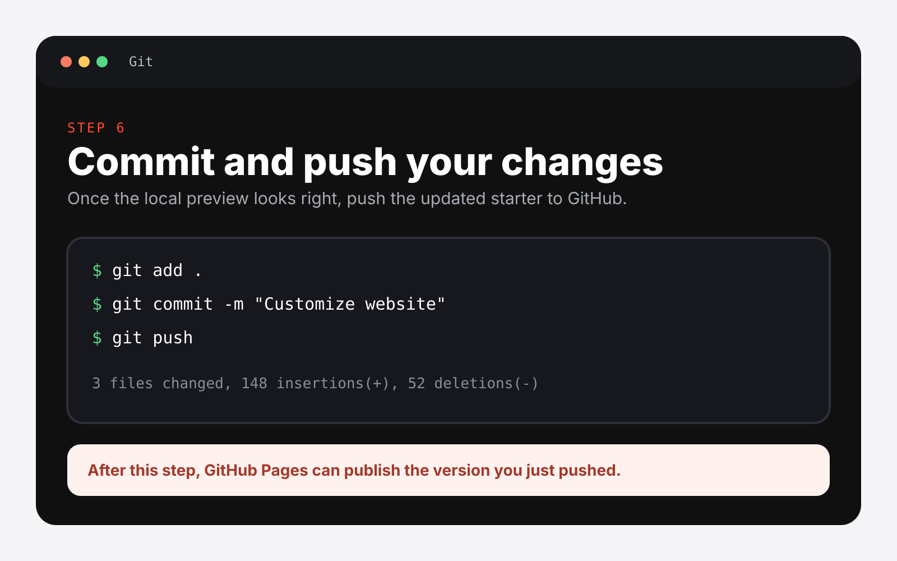
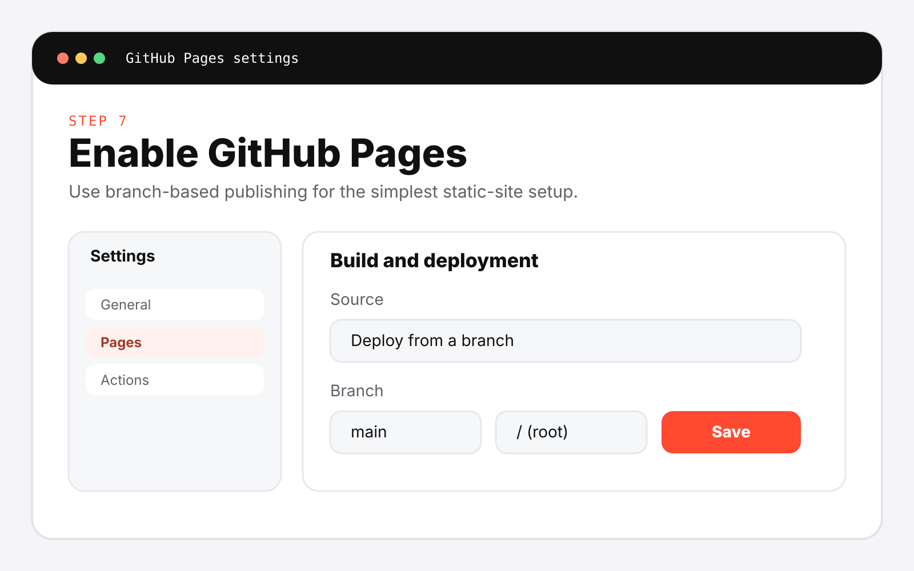
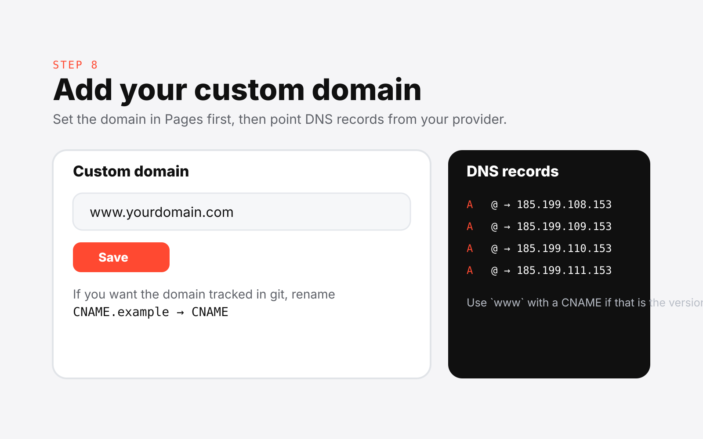
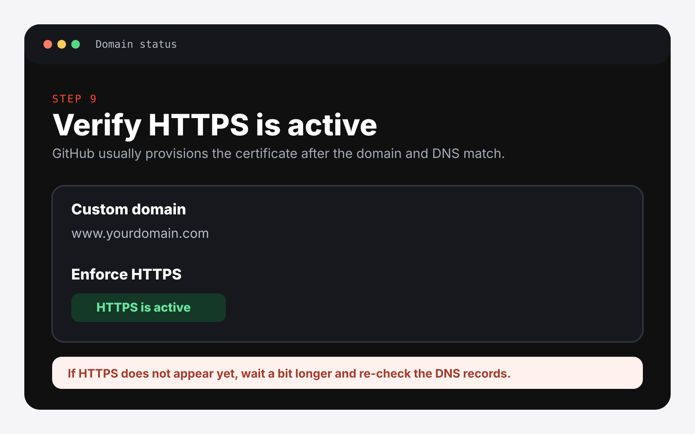

Use This Template
Create your own copy of the repo on GitHub. Fork only if template mode is unavailable.
 Codex Free Website
Use This Template
Codex Free Website
Use This Template
Template-first. Static. GitHub Pages ready.
Start with a simple template, customize it with Codex, preview it locally, publish on GitHub Pages, and launch on your own domain.
The primary path is template-first. If template mode is not enabled on GitHub, fork the repo instead.
How It Works
Create your own copy of the repo on GitHub. Fork only if template mode is unavailable.
Open the repo in Codex and tell it what site you want to build.
Run the preview script and check the site in your browser before you publish.
Commit your edits and push them to your copy of the repository.
Publish from the root of the main branch with no build step.
Connect a custom domain in GitHub Pages settings and finish with HTTPS.
What This Repo Is
This repo is a reusable static website template designed for Codex and GitHub Pages. The root files are the starter.
Go from zero to a live website quickly, with one clear flow and a standard custom-domain step built into the product.
Prompt Recipes
Prompt 01
Turn this repository into a personal website for [name], a [role]. Keep it static HTML, CSS, and vanilla JavaScript only. Use a clean responsive layout, update the hero, about, proof, and contact sections, and keep GitHub Pages compatibility.Open full prompt
Prompt 02
Turn this repository into a portfolio website for [name or studio]. Keep it static HTML, CSS, and vanilla JavaScript only. Create a strong hero, selected work grid, case-study summaries, services, and contact section with responsive layout.Open full prompt
Prompt 03
Turn this repository into a landing page for [product or business]. Keep it static HTML, CSS, and vanilla JavaScript only. Create a clear hero, benefits, proof, CTA, FAQ, and contact section with a modern responsive design.Open full prompt
What Is Included
index.html, styles.css, and script.js stay simple and editable.
scripts/preview.sh starts a local preview with one command.
Three ready-to-copy Codex prompts live in prompts/.
QUICKSTART.md walks through the exact template-to-domain flow.
CNAME.example and GitHub Pages guidance are built into the repo.
AGENTS.md and a repo-local skill keep future edits on the right path.
Quickstart Screenshots









FAQ
Yes. This repo uses plain HTML, CSS, and vanilla JavaScript only.
No. The default flow is branch-based GitHub Pages publishing with no build tooling.
Yes. Run sh scripts/preview.sh and open http://localhost:8000.
The product promise includes a custom domain. GitHub Pages hosting can stay free, but the domain itself is usually a separate purchase.
Use one of the prompt recipes in prompts/ and tell Codex what kind of site you want to publish.
Ready To Start?
This repo is built to get someone from zero to a live website with the minimum possible setup.